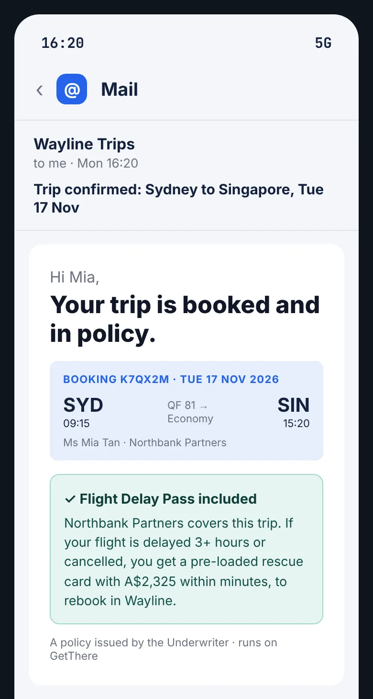
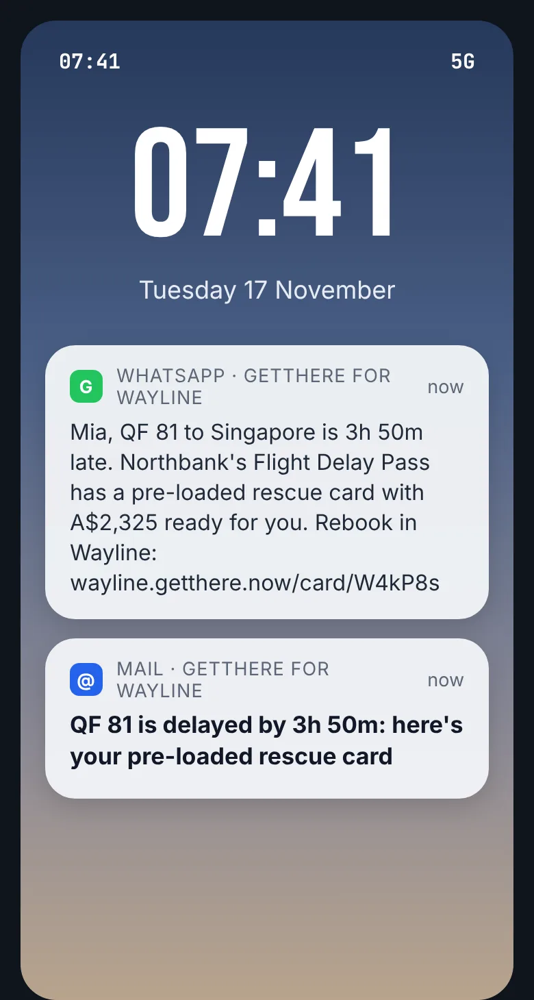
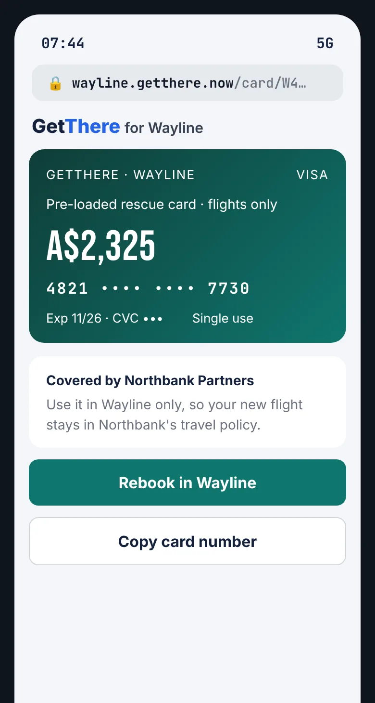
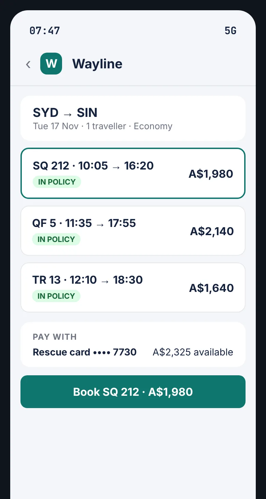
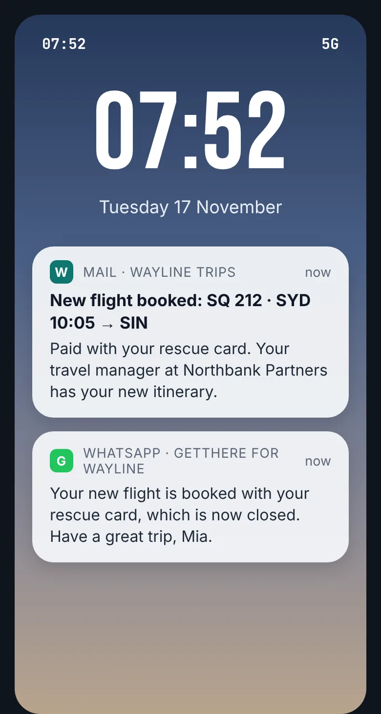

Tuesday, at the airport · with company cover
11 minutes from the delay to a new booking, and Mia still makes the client dinner
Mia works for Northbank Partners, which books its business travel on Wayline, a travel platform. Northbank has switched on the Flight Delay Pass for every international trip.

Covered when it's booked
Mia books her trip in Wayline as usual. The confirmation says her flights carry a Flight Delay Pass from her company. She ticks the pass's terms in Wayline's checkout and pays nothing.

The delay hits
Her flight is 3 hours 50 minutes late. Before she reaches the airline counter, a WhatsApp message brings her pre-loaded rescue card. The same card comes by email too.

Her rescue card is ready
A$2,325 to spend once, on flights, in Wayline. No call to an agent and no queue.

She picks a flight in policy
She searches in Wayline, where Northbank's travel policy already applies, and pays with the rescue card.

Rebooked, and on the map
Her new flight is on her Wayline trip, so her travel manager sees where she is without a single phone call.